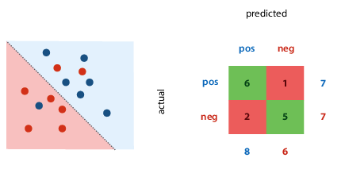
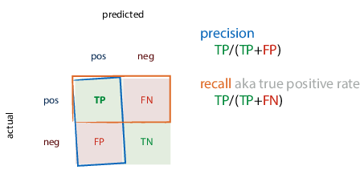

ML: Methodology
Performing an experiment
Never judge your performance on the training data (or you’ll fail the
course and life).
The proportion of training to test data is not important, the absolute
size of the test data is. Aim to have min 500 examples in
test data (ideal 10 000 or more).
What if you need to test many models?
e.g. k-nearest neighbours, which classifies a point based on the
classification of its k nearest neighbours.
The modern recipe
- Split data into train, validation, and test data. Sample randomly,
at least 500 examples in test set. - Choose model, hyperparameters, etc. only based on the training set.
Test on validation. Don’t use test set for anything. - State the hypothesis.
- During the final run, train on training + validation data.
- Test hypothesis once on the test data. Usually at the
very end of the project, when you write report/paper.
Don’t re-use test data:
- you’d pick the wrong model
- it would inflate your performance estimate
For temporal data, you’ll probably want to keep the data ordered by
time.
Which hyperparameters to try?
- trial-and-error (via intuition)
- grid search: define finite set of values for each hyperparam, try
all combinations - random search
Cross-validation
You still split your data, but every run, a different slice becomes the
validation data. Then you average the results for the final result.
If it’s temporal data, you might want to do walk-forward validation,
where you always expand your data slices forward in time.
What to report
Classification
What’s a good error (5%)?
It depends, just like in every class so far:
- Class imbalance: how much more likely is a positive example than a
negative example? - Cost imbalance: how much worse is mislabeled positive than
mislabeled negative? e.g. how bad is it to mark a real email as spam
vs letting a spam message into your inbox?
Performance metrics
Confusion matrix (contingency table)
Metrics for a single classifier.
The margins give four totals: actual number of each class present in
data, number of each class predicted by the classifier.

Precision and recall
Also for a single classifier.
- Precision: proportion of returned positives that are
actually positive - Recall: proportion of existing positives that the classifier found

You can then calculate rates:
- True positive rate (TPR): proportion of actual positives that we
classified correctly - False positive rate (FPR): proportion of actual negatives that we
misclassified as positive

ROC (receiver-operating characteristics) space: plot true positives
against false positives. the best classifier is in the top left corner.

Ranking classifier: also gives score of how negative/positive a point
is.
- turning classifier into ranking classifier:
- for linear classifier, measure distance from decision boundary,
and now you can scale classifier from timid to bold by moving
the decision boundary - for tree classifier: sort by class proportion in each segment
- for linear classifier, measure distance from decision boundary,
- ranking errors: one per every pair of instances that’s ranked
wrongly (a negative point is ranked more positively than a positive
point)
Coverage matrix: shows what happens to TPR and FPR if we move threshold
from right to left (more or less identical to ROC space)
If we draw line between two classifiers, we can create classifier for
every point on that line by picking output of one of the classifiers at
random. E.g. with 50/50 probability, end up halfway between the two. The
area under the curve of classifiers we can create (“convex hull”) is
good indication of quality of classifier – the bigger this area, the
more useful classifiers we can achieve. Good way to compare classifiers
with class or cost imbalance, if we’re unsure of our preferences.
Regression
Loss function: mean squared errors
()
Evaluation function: root mean squared error
()
- you may want to report this, because minimised at same places as MSE,
but has same units as the original output value, so easier to
interpret
Bias: distance from true MSE (which is unknown) to the optimum MSE.
- high bias: model doesn’t fit generating distribution.
“underfitting” - reduce by increasing model capacity or features
Variance: spread of different experiments’ MSE around the true MSE
- high variance: high model capacity, sensitivity to random
fluctuations. “overfitting” - reduce by reducing model capacity, adding regularization, reducing
tree depth
specifically for k-NN regression: increasing k increases bias and
decreases variance
Dartboard example:

Errors & confidence intervals
Statistics tries to answer: can observed results be attributed to real
characteristics of the models, or are they observed by
chance?
If you see error bars, the author has to indicate what they mean –
there’s no convention.
Standard deviation: measure of spread, variance
Standard error, confidence interval: measure of confidence
If the population distribution is normal, the standard error of the mean
is calculated by (because the
sample distribution is the t distribution)
Re confidence intervals: the correct phrasing is “if we repeat the
experiment many times, computing the confidence interval each time, the
true mean would be inside the interval in 95% of those experiments”
Use statistics in ML to show confidence and spread.
The no-free-lunch theorem and principle
Answer to question “what is the best ML method/model in general?”
Theorem: “any two optimization algorithms are equivalent when their
performance is averaged across all possible problems”
i.e. you can’t say shit in general.
A few outs:
- universal distribution, the datasets for which our methods works are
the likely ones - Occam’s razor, the simplest solution/explanation is often the best
Principle: there is no single best learning method; whether an algorithm
is good depends on the domain
Inductive bias: the aspects of a learning algorithm, which implicitly or
explicitly make it suitable for certain problems make it unsuitable for
others